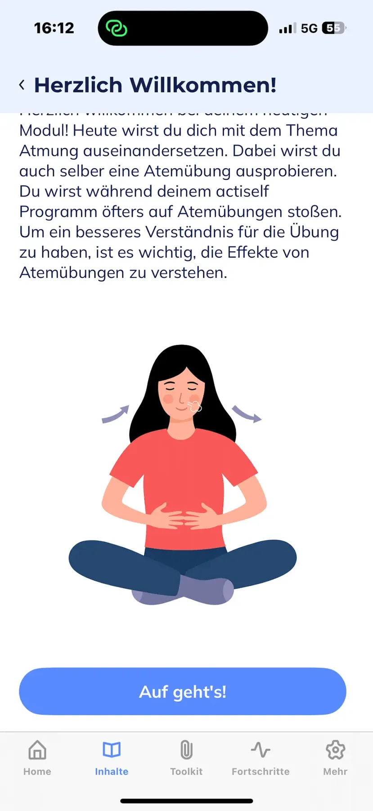

Prevention app for iPhone and Apple Watch
Active for your mental health!
actiself helps you cope with stress, shows you how to protect yourself from overload and motivates you to become more active and move more.

Developed by experts from the Max Planck Institute of Psychiatry
Who is actiself for?
When stress at work just won’t let up.
Chronic, high stress can lead to serious health problems such as burnout or even depression. Lack of exercise is an additional risk factor and also weighs on your mental health.
With a programme lasting several weeks, actiself helps you cope better with stress, move more and become more active. This way you can protect yourself from overload and prevent long-term health problems.
actiself supports you in these areas:
How does actiself work?
One small step every day – supported by your smartwatch.



Effectiveness
Study shows: significantly fewer depressive symptoms.
In the SMART study at the Max Planck Institute of Psychiatry, the smartwatch-based intervention on which actiself is based was tested over 12 weeks.
The result: at the end, participants who received the intervention had significantly fewer depressive symptoms than the control group without the intervention – 9.8 instead of 13.9 points on the established PHQ-9 questionnaire.
Pilot study with 52 participants, published on medRxiv. A larger randomised study will follow as the next step.
Getting started
In four simple steps
- 1
Download the app
Download actiself from the Apple App Store. The watchOS app is installed automatically.
- 2
Sign up
Sign up with an email address and a password.
- 3
Confirm
Enter the code you receive by email.
- 4
Activate
Enter your activation code from our shop – and you’re ready to go!

Scientifically grounded
From research at the Max Planck Institute of Psychiatry
The actiself app is the result of years of research and development by scientists at the Max Planck Institute of Psychiatry in Munich. In January 2025, Biomentric launched actiself as its first app.
Get active for your mental health!
Questions? Write to us at support@biomentric.zohodesk.eu or read the FAQs.